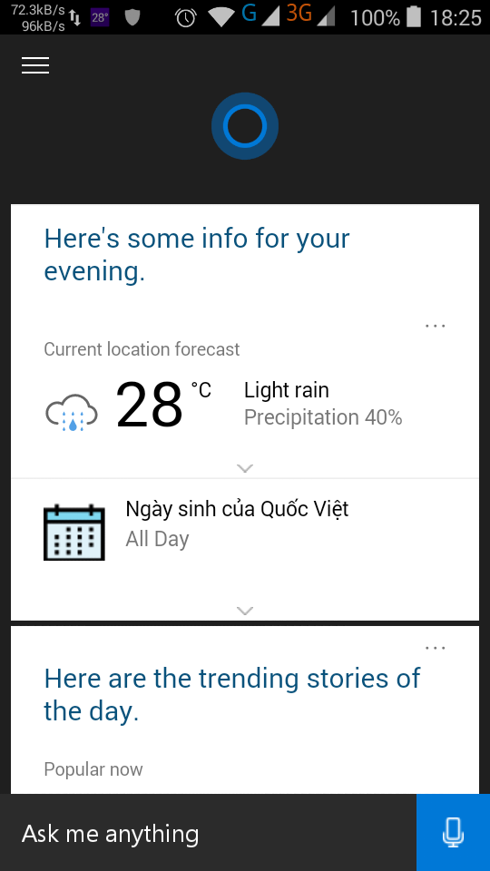
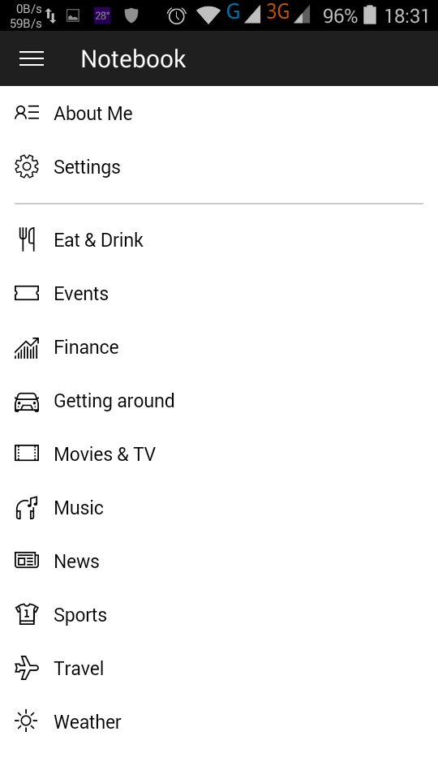
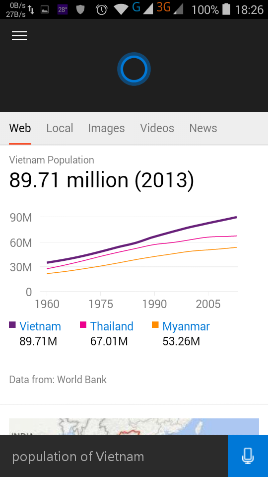
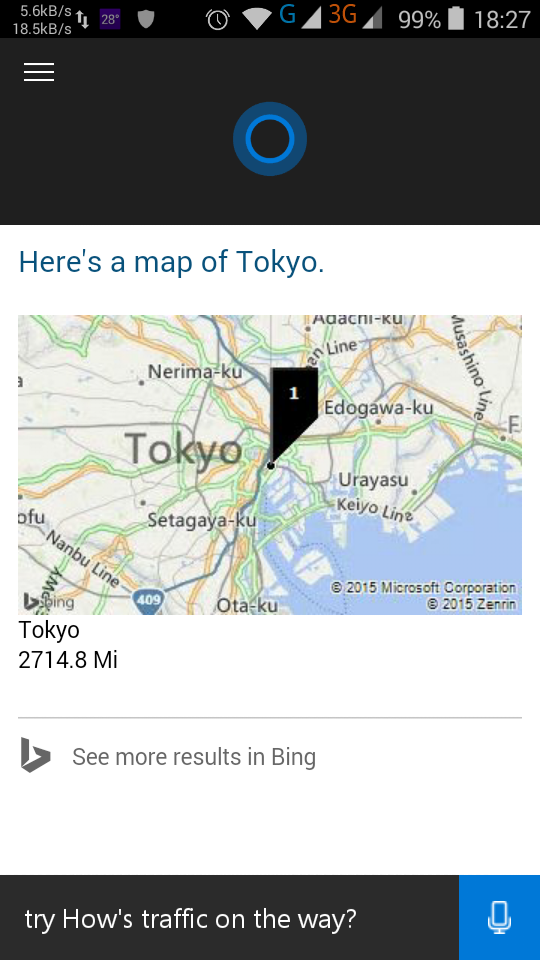
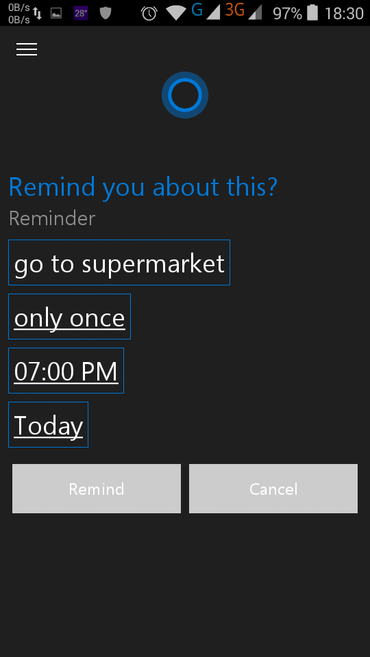
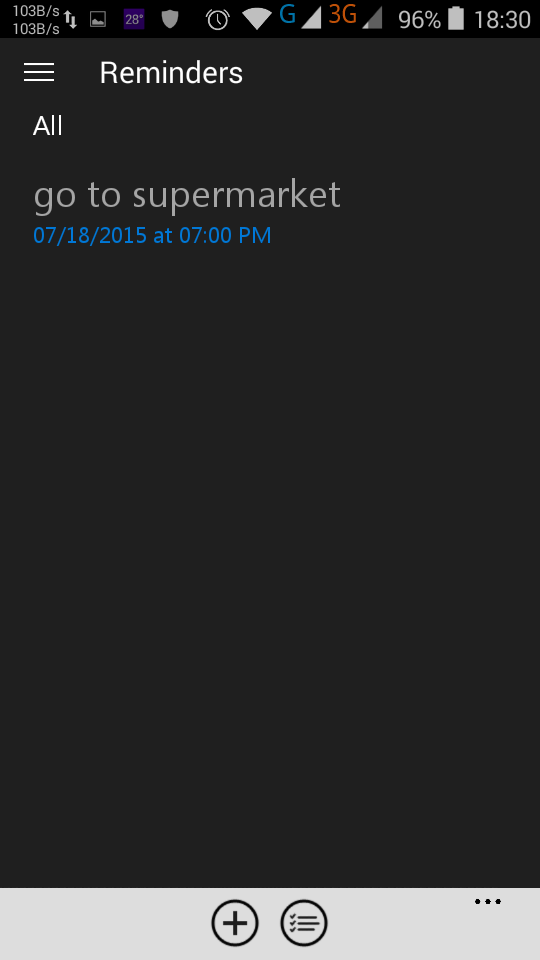
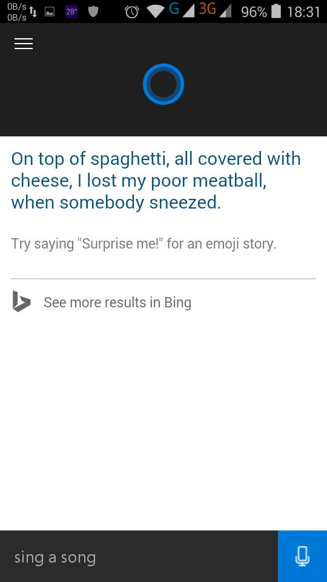
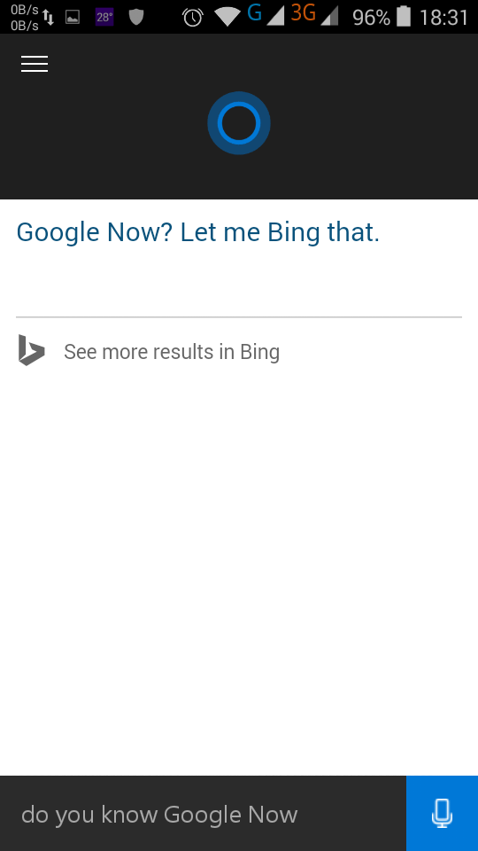

[Review] Cortana trên Android: Cho tra cứu trên internet, tạo nhắc nhở, hát,...

Microsoft đã có ý định đưa cô trợ lí ảo Cortana lên các hệ điều hành khác, cụ thể là Android và iOS. Và hôm nay app Cortana trên Android đã bị leak. Mời các bạn tải về tại
đây (App hoạt động trên Android 4.0 trở lên)
Hoặc có thể quét mã QR:
Về mặt giao diện, Cortana trên Android không khác mấy so với phiên bản trên Windows Phone hay Windows 10. Bạn có thể truy cập vào Notebook để xem những thứ Cortana có thể truy cập như tin tức, nhắc nhở, lịch,...

Cortana trên Android có thể sẽ là một đối thủ đáng gờm với Google Now cho dù trợ lí ảo của Google được thêm tính năng nhận diện bằng tiếng Việt. Cortana đã từng
dự đoán chính xác các trận thi đấu ở World Cup 2014 bằng CSDL của Bing cùng trí thông minh nhân tạo của mình. Không chỉ thế, Cortana còn có thể làm vui chủ nhân bằng cách hát, kể chuyện hay trả lời câu hỏi một cách khá hóm hỉnh.

Dùng Cortana để tra cứu thông tin trên internet
Việc tra cứu thông tin trên internet được Cortana thực hiện dựa vào Bing - cổ máy tìm kiếm của Microsoft. Hiện thời Cortana chỉ nghe lệnh bằng tiếng Anh nhưng mình thấy khả năng nhận diện tiếng Anh của Cortana nhanh và chính xác hơn Google Now.

Bạn cũng có thể tìm kiếm địa điểm
Cortana cũng có thể tìm kiếm và tính khoảng cách giữa hai địa điểm nhờ sử dụng Bing Map.

Bạn cũng có thể dùng Cortana để nhắc nhở, ví dụ như "Remind: go to supermarket at 7 PM"
Dùng Cortana để nhắc nhở cũng rất hay, bạn không cần phải mở app xong nhập khá mất thời gian. Tuy nhiên mình sẽ chọn Google Now vì nó đã hỗ trợ tiếng Việt.

Bạn có thể xem lại những nhắc nhỡ chưa thực hiện trong phần Reminders
Ngoài ra, bạn cũng thể nhờ Cortana "hát" bằng cách nói "Sing a song" nghe cũng khá vui tai.

Hoặc bạn có thể hỏi Cortana về những thứ liên quan đến công nghệ hay bản thân cô trợ lí như "Who is your father?" , "How old are you?" , "Do you know Google Now?" ,... Bạn sẽ nhận được nhiều câu trả lời thú vị.

Sẽ có nhiều bạn hỏi "Tại sao Microsoft lại đem những thứ đặc trưng của Windows Phone như Office, các ứng dụng MSN, Cortana sang các hệ điều hành đối thủ như Android và iOS?" Thật ra Microsoft muốn "lợi dụng" sự phổ biến của Android và iOS để làm lợi cho những dịch vụ của họ như Bing, MSN. Giúp tăng sức cạnh tranh với các dịch vụ của Google hay Apple. Không rõ những điều này có giúp cho Microsoft có tầm ảnh hưởng hơn hay khiến cho WP mất dần thị phần. Tuy nhiên, việc mang Office lên iOS và Android đã gặt hái chút thành công nhờ việc nhiều khách hàng đăng kí gói dịch vụ Office 365 hơn. Hãy chờ xem nhờ Cortana trên Android và iOS mà Bing có lớn mạnh và trở thành một đối thủ "sừng sỏ" của Google Search hay không.


.png)


.png)
{kind=link}
{kind=link}
{kind=link}
{kind=link}
{kind=link}
{kind=link}
{kind=link}
{kind=link}
{kind=link}